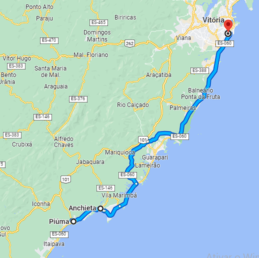

Meu nome é Ruan Bona, nasci e moro em Piúma, me desloco até Vila Velha todo dia, sou entusiasta e estudante de tecnologia e desenvolvimento de software, busco adquirir experiência profissional na área e capital para eventualmente investir no meu negócio.

Meus principais hobbys são musculação, ciclismo e ouvir música.
Academia e profissional
Para o desenvolvimento de meus trabalhos conto com inglês avançado, experiência profissional em softwares de desenvolvimento e manipulação de dados e páginas web.
Durante meu fundamental estudei nas escolas públicas de meu município e fiz meu ensino médio no IFES, onde fiz um curso técnico em recursos naturais integrado ao ensino médio, lá também participei de projetos de iniciação científica jr, onde participamos da publicação de um livro